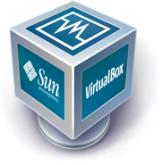

|  |
O VirtualBox é uma família de poderosos produtos de virtualização x86 para corporações e para uso doméstico. O VirtualBox tem recursos extremamente ricos, é um produto de alto desempenho para clientes corporativos, mas também é uma solução profissional que é livremente grátis como um Software de Código- fonte Aberto sob os termos da Licença Pública Geral GNU(GPL). O VirtualBox está sendo ativamente desenvolvido com frequentes versões e tem uma crescente lista de recursos, sistemas operacionais convidados suportados e uma plataforma na qual é executado. |